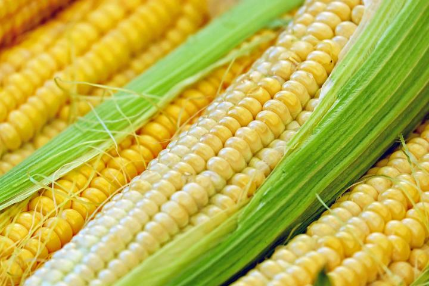

Jennifer Newsome
Homework 1
Planting, Growing, and Harvesting Sweet Corn
- Plant seeds 1.5 to 2 inches deep and 4 to 6 inches apart.
- Rows should be spaced 30 to 36 inches apart.
- You may choose to fertilize at planting time; corn is meant to grow rapidly.
- Water well at planting time.

Next